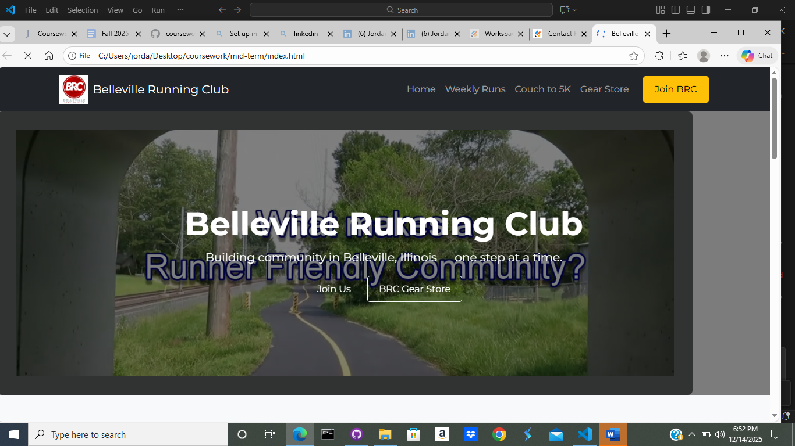
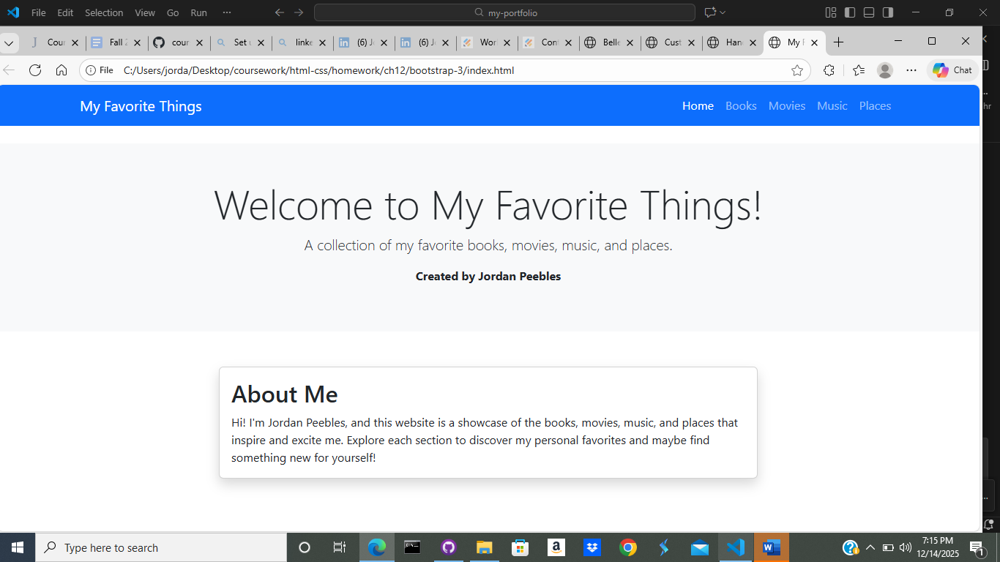

My Projects
Mid-Term Project: Belleville Running Club Website
Description: Developed a responsive website for the Belleville Running Club using HTML, CSS, Bootstrap, and JavaScript. The site features sections for weekly group runs with embedded Google Maps and route links, a Couch to 5K training program with pricing tiers and sign-up forms, and a navigation menu with smooth scrolling. Incorporated Bootstrap for responsive design, custom CSS for styling, and JavaScript for interactive navbar functionality and video playback.
Technologies Used: HTML, CSS, Bootstrap, JavaScript.
Challenges and Solutions: Ensured responsive design across devices using Bootstrap grid system. Integrated external links and maps seamlessly. Managed state for interactive elements like the navbar active states.
Screenshots/Videos:
Links: GitHub Repository
Bootstrap Homework Project: My Favorite Things Website
Description: Developed a multi-page responsive website titled "My Favorite Things" using Bootstrap 5. The site features a navigation bar with links to sections for books, movies, music, and places. Each page uses Bootstrap components like cards, grids, and responsive utilities to display content in an organized and visually appealing manner.
Technologies Used: HTML, CSS, Bootstrap.
Challenges and Solutions: Ensured full responsiveness across devices by utilizing Bootstrap's grid system and responsive classes. Organized content into separate pages to maintain clean structure and easy navigation.
Screenshots/Videos:
Links: GitHub Repository